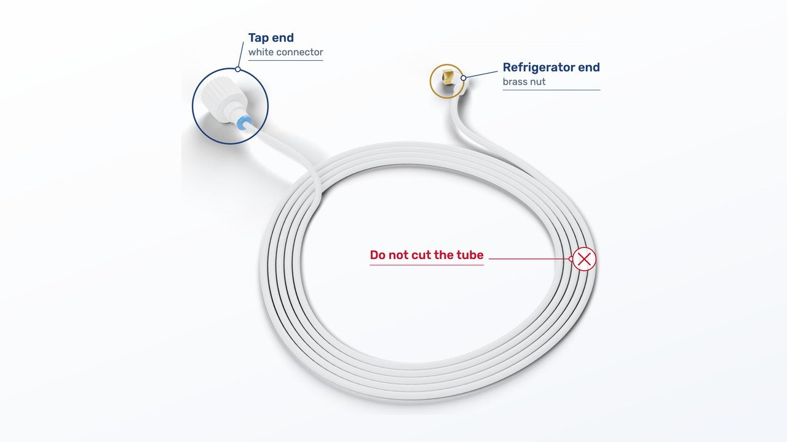
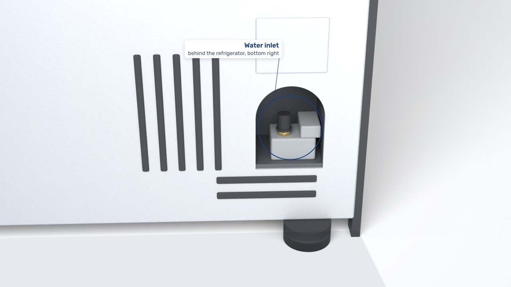
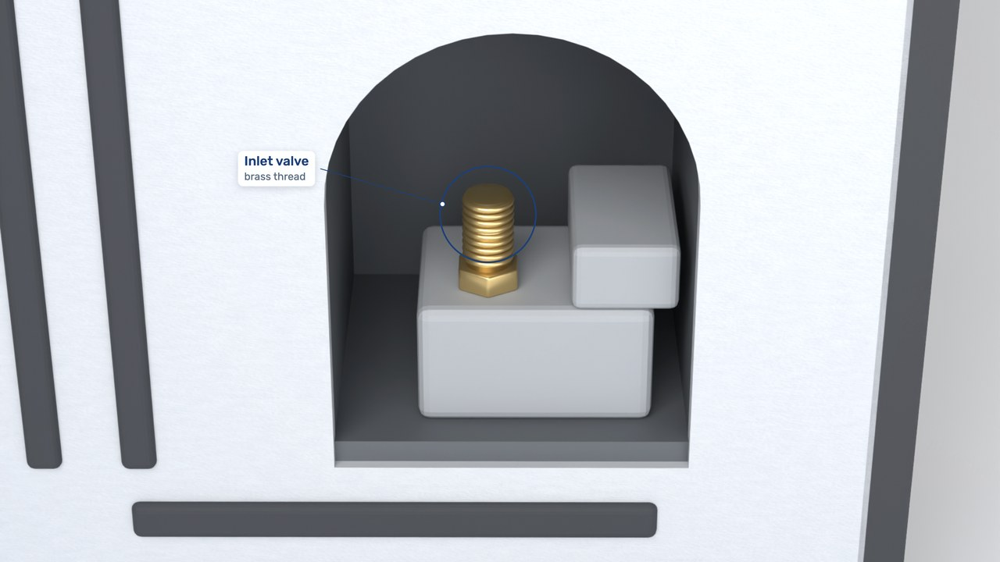
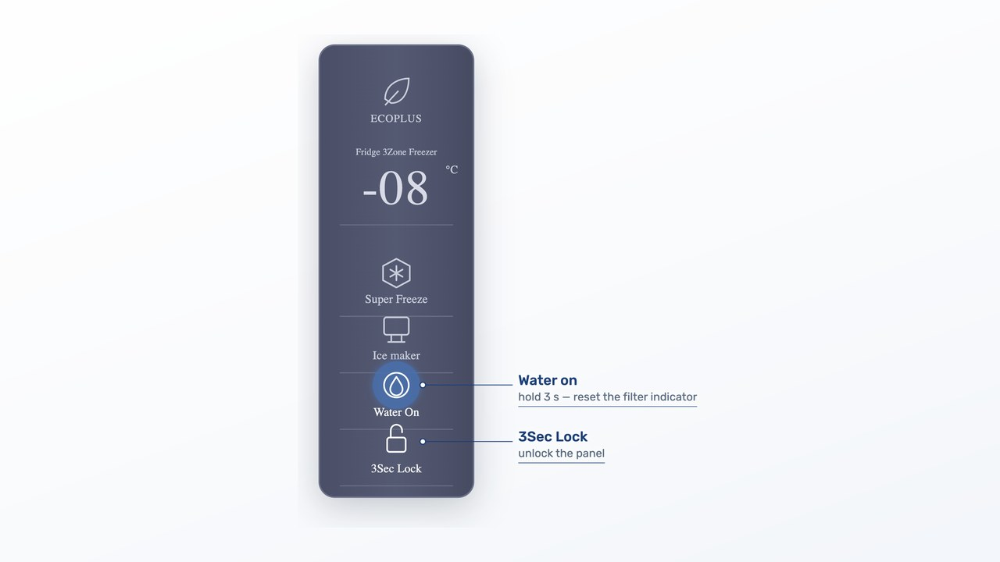
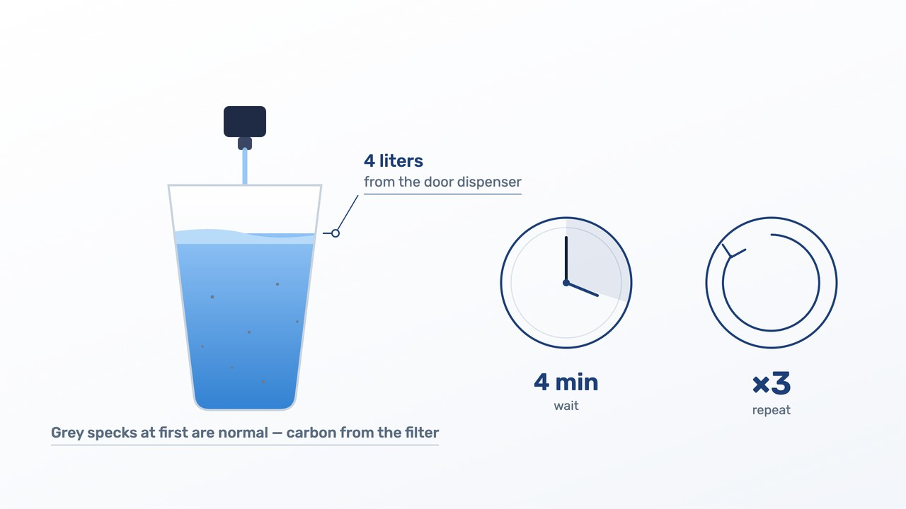
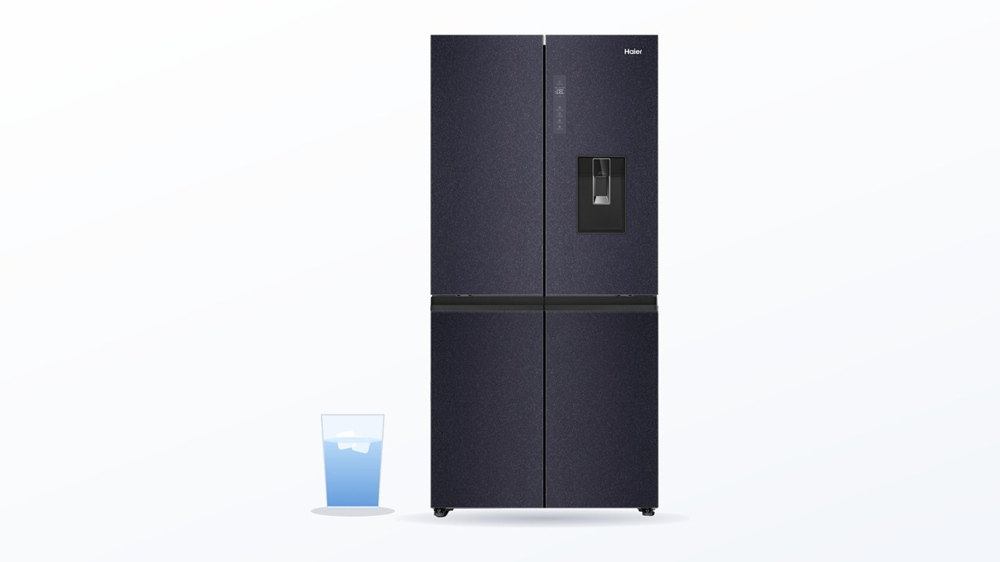

Before you start
- Unplug the refrigerator
- Close the main water tap
- Make sure the ice maker is off

In the kit
One tube, ready to use: a white tap connector at one end (¾″ thread, rubber washer inside), a brass nut for the refrigerator at the other.
Do not cut the tube, and use only the new kit.
Simple to connect, in 4 steps
Connecting to the water supply


Connecting to the refrigerator




Check & flush





If something does not work
No water from the door dispenser?
Check in this order:
- The panel is unlocked (holding 3Sec Lock unlocks it).
- Water dispensing is on: press Water on, and the indicator is lit.
- The main water tap is open.
- The refrigerator is plugged in.
- The right fridge door is closed. While it is open, no water comes out, even when dispensing is on.
A drip at one of the connections?
Close the main water tap. At the tap, check that the rubber washer sits inside the white connector; at the back of the refrigerator, tighten the brass nut again, firmly but not over-tight. Open the tap slowly and check again.
The water is grey or has specks?
In the first water this is normal: carbon from the new filter. Keep flushing (4 litres, a 4-minute wait, three times) until the water is clear.
How long until there is ice?
Up to 24 hours from the moment you turn the ice maker on. Throw away the first batches.